PayPal Digital Wallet
Redesigning the new-user experience to help millions of customers understand and adopt PayPal’s new digital wallet design.
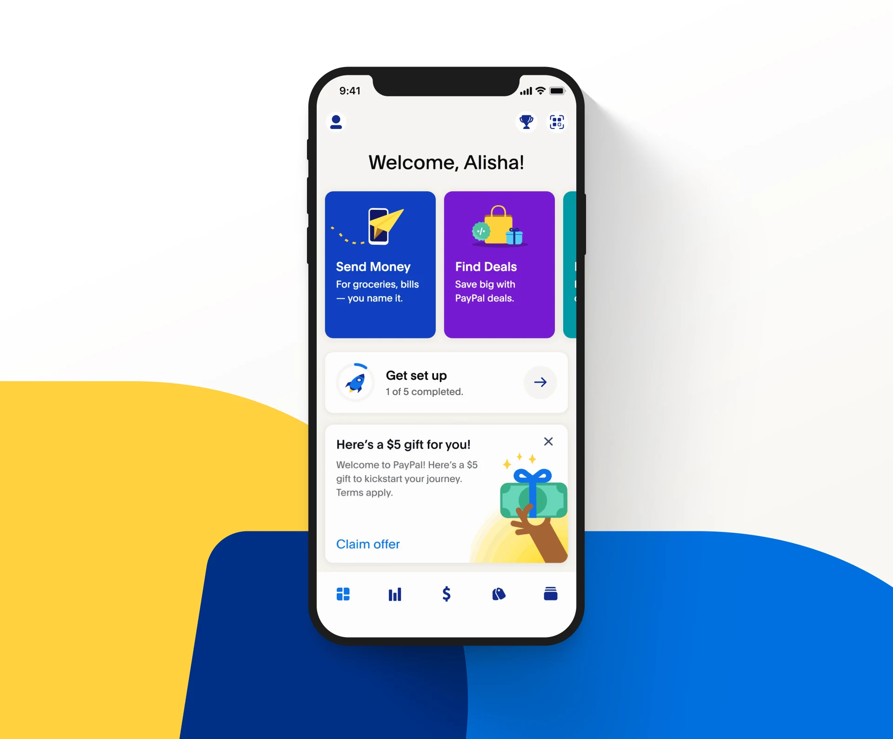
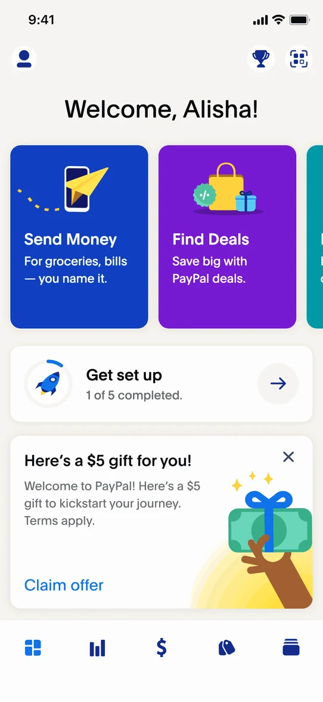
Project at a glance
PayPal does a lot; not everyone knew
PayPal was evolving from a payments product into a broader digital wallet. The redesigned PayPal app introduced a much wider set of capabilities. We needed an onboarding experience that could introduce the new PayPal without overwhelming people — and work across a rapidly evolving global product. I led the design of a new-user experience that helped customers understand the value of the wallet, personalize their setup, and discover relevant features from their first session.
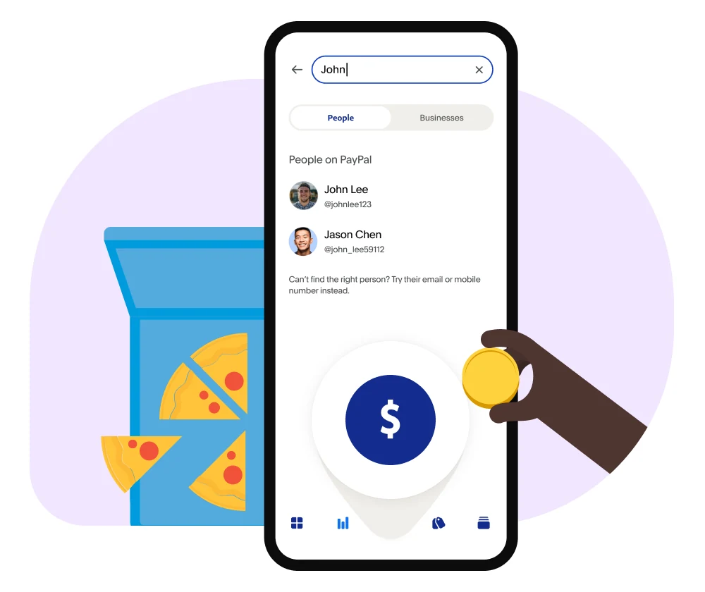
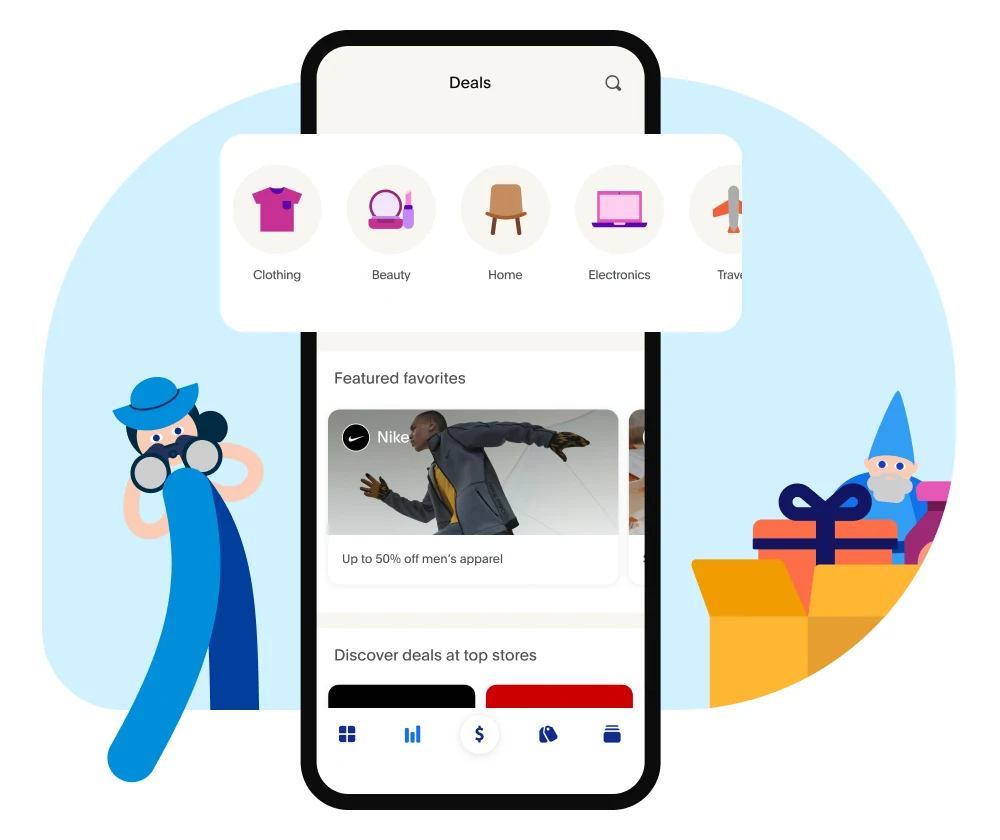
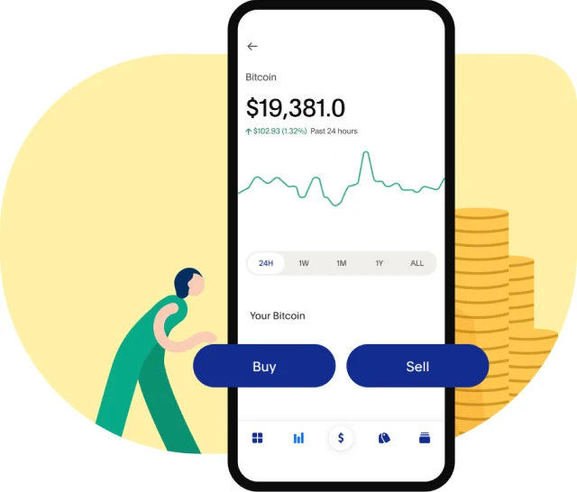
A new PayPal needed a new intro
The new home experience brought previously separate products into a single destination. But while the product itself was changing dramatically, the first-time experience still needed to answer a basic question: How do we help someone quickly understand what PayPal can do for them?
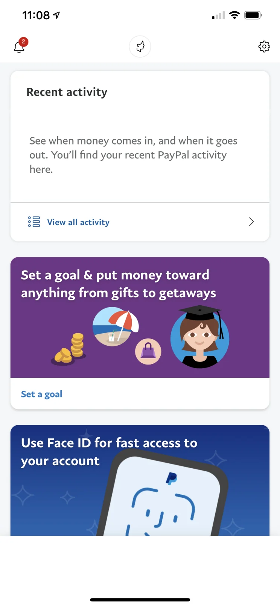
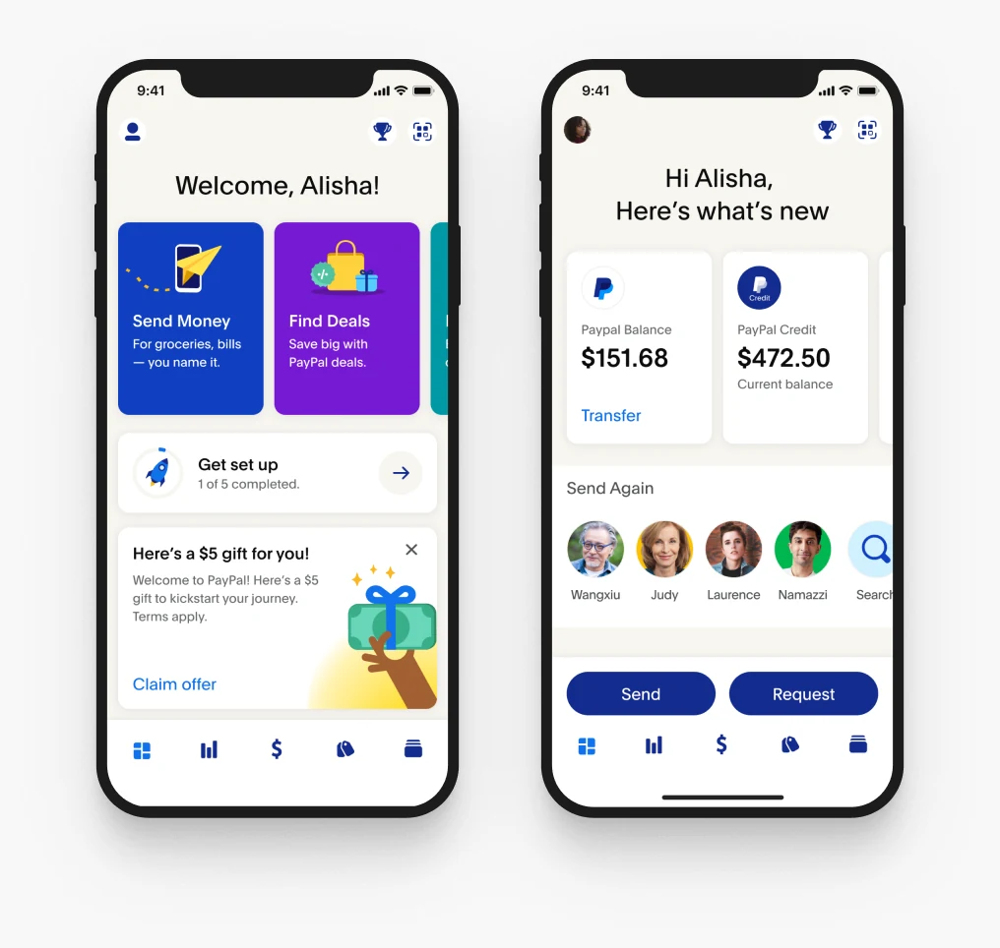
Considering the impact
I led the end-to-end design of the new-user experience, working across product, research, content, engineering, and teams responsible for individual wallet products. The impact reached past new customers: the redesign changed navigation for millions of existing ones too, so one flow had to serve three audiences at once — brand new, new to the app, and simply updating. Showing everyone the same onboarding would have re-introduced the app to people who already knew it.
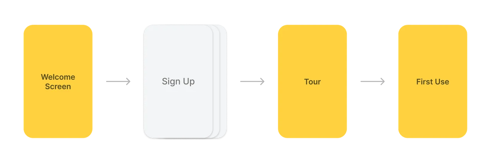
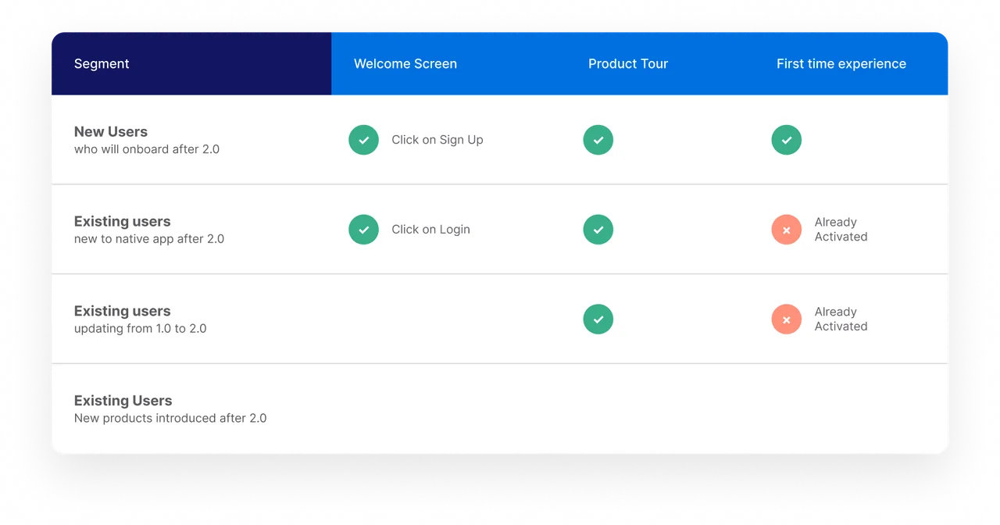
| Segment | Welcome Screen | Product Tour | First-time experience |
|---|---|---|---|
| New users, who will onboard after 2.0 | Yes — click on Sign Up | Yes | Yes |
| Existing users, new to native app after 2.0 | Yes — click on Login | Yes | No — already activated |
| Existing users, updating from 1.0 to 2.0 | Not applicable | Yes | No — already activated |
| Existing users, new products introduced after 2.0 | |||
Global launch
Launching meant 100+ markets, two platforms, and product availability that differed by country — so content was localized for availability and currency, and each piece went out as an experiment measured against the flow it replaced.
Profile Completion: For new users, the biggest challenge was friction — most people abandoned PayPal mid-transaction — a card that wouldn’t link, a payment that declined. Waiting until checkout to get an account in order was too late, so profile completion moved that work forward. We developed an activation zone on the dashboard and turned setup into a visible, resumable checklist, clearing those steps before the first transaction.
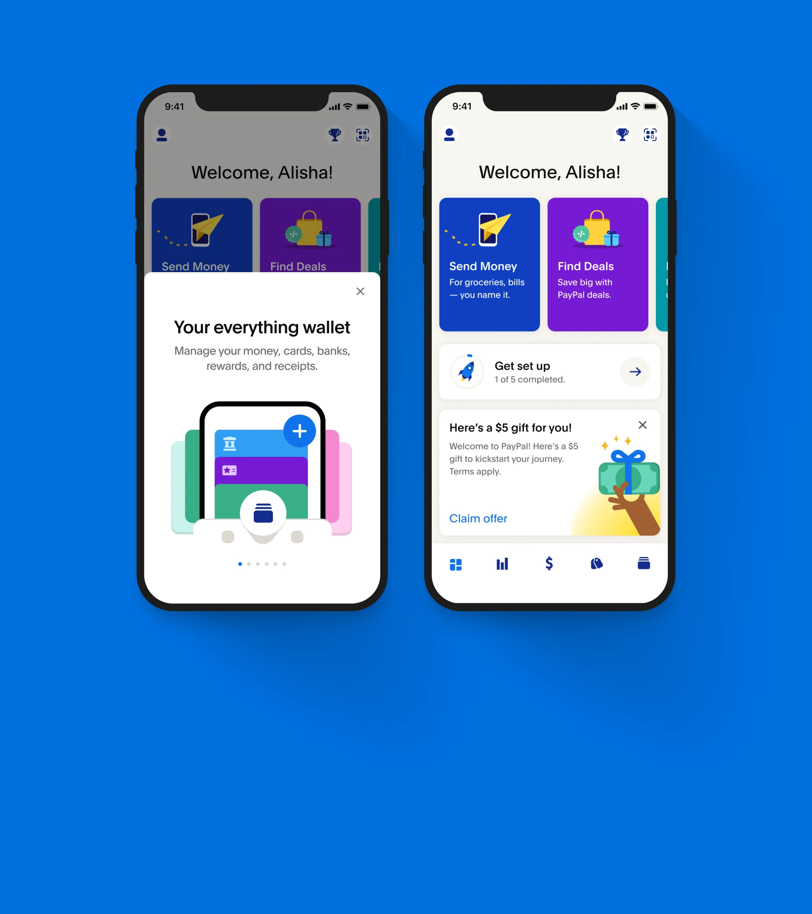
-
Activation
- Lift in 7-day activation
- Lift in secondary activation
-
Profile completion
- Increase in FI addition
- Reduction in checkout declines
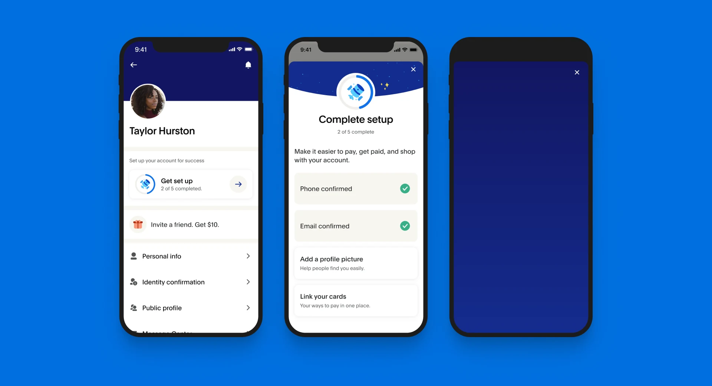
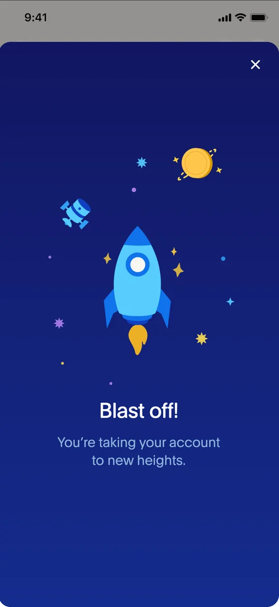
Value and education
Because PayPal’s capabilities varied across customers and markets, a fixed onboarding sequence wouldn’t scale. We created a modular system where content could be assembled based on product availability, market, and customer context. The welcome screens answer that before sign-up, each carrying one concrete reason to join. The second set walks through PayPal’s line of products once someone is in the app — what each one does, and how to start.
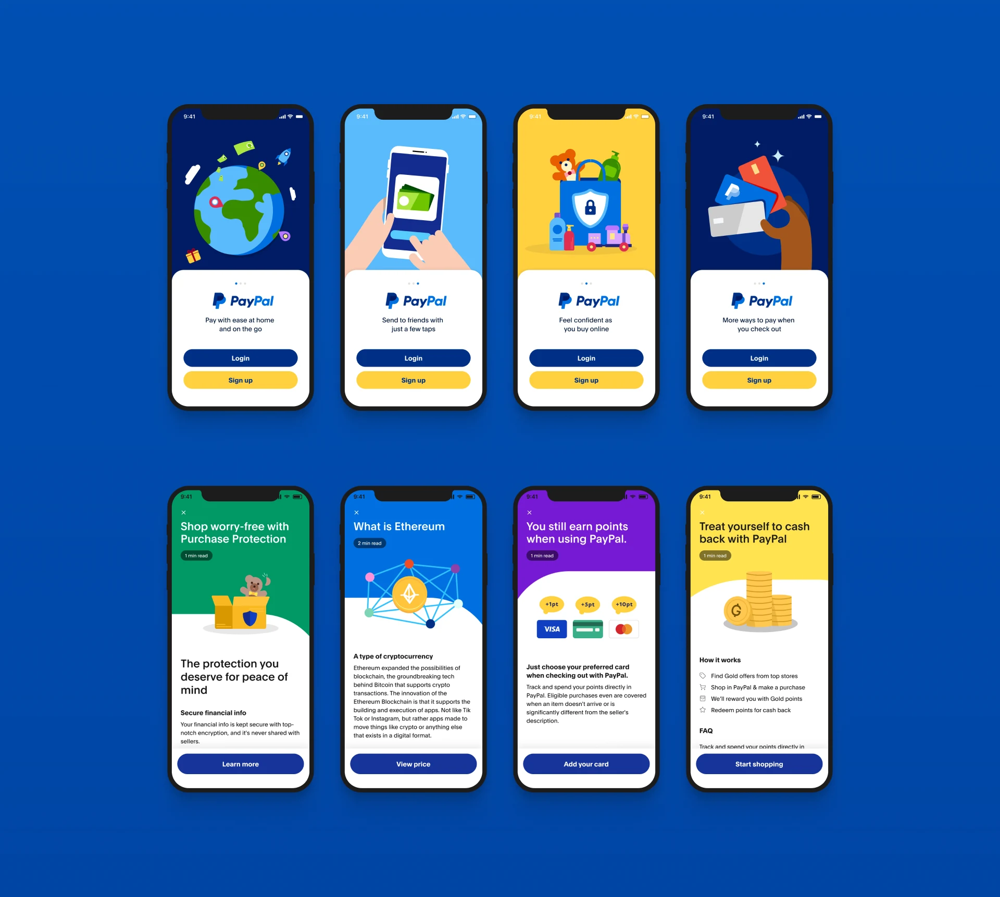
The impact
The new-user experience launched as part of PayPal’s global digital wallet rollout, creating a unified introduction to the redesigned product. The work established a scalable onboarding framework that allowed new wallet capabilities to be introduced without rebuilding the customer journey from scratch.